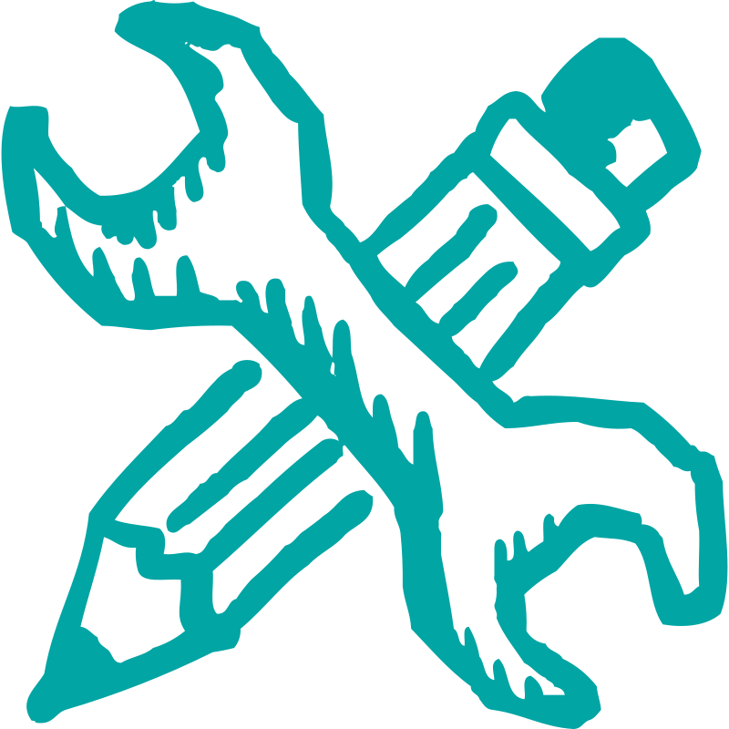

SurveyLM
A tool for simulating decisions and alignment behaviour in synthetic agents using surveys, experiments & social contexts.
LifeOS
An adaptive system to support personalised learning, well-being, and everyday AI interactions across life domains.
ExpertLM
Leverage ALMs and semantic search to intelligently match experts and teams to large-scale, complex projects.
AI × IoT
Plug AI into real-world sensing environments through edge intelligence and autonomous configuration tools.

Other Solutions
Explore pilot tools, experimental prototypes, and domain-specific systems tailored to emerging Social AI use cases.